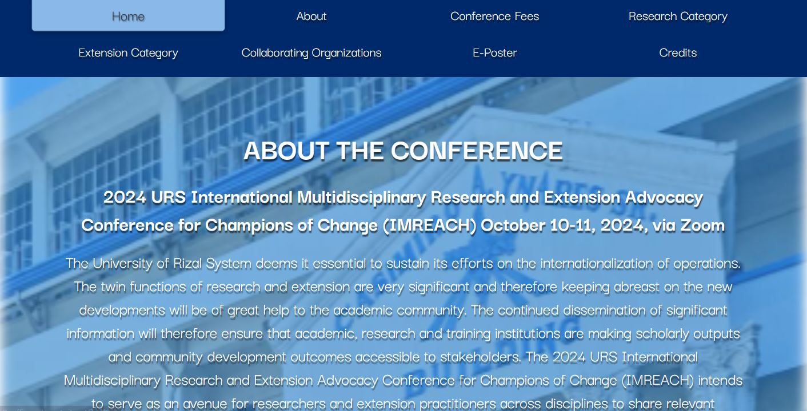
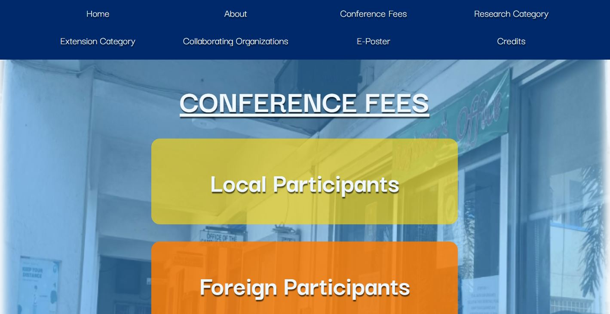
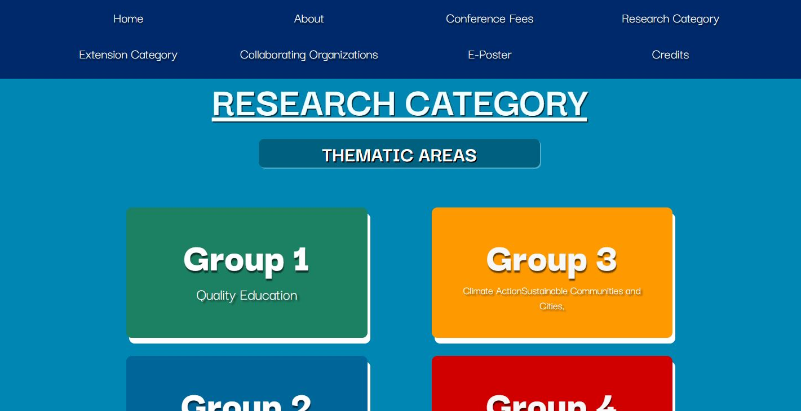
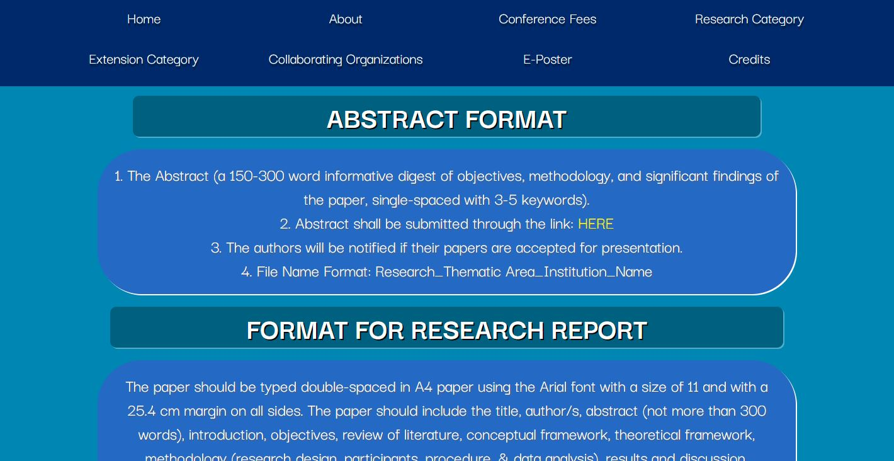
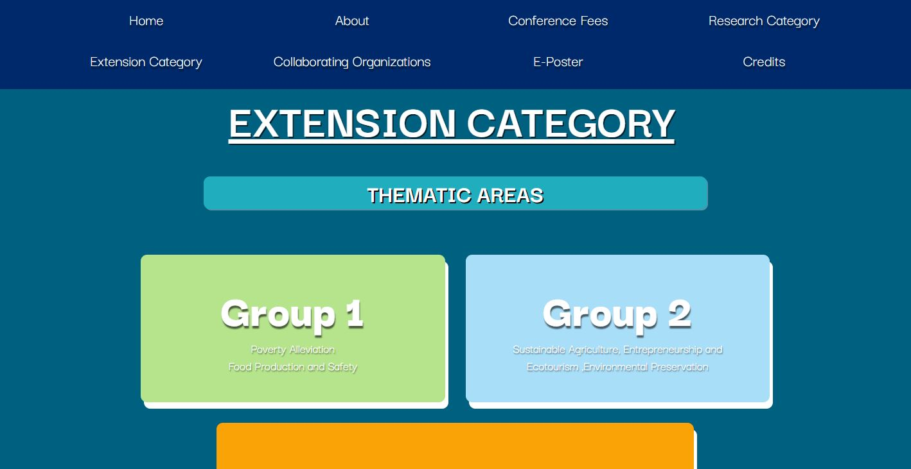
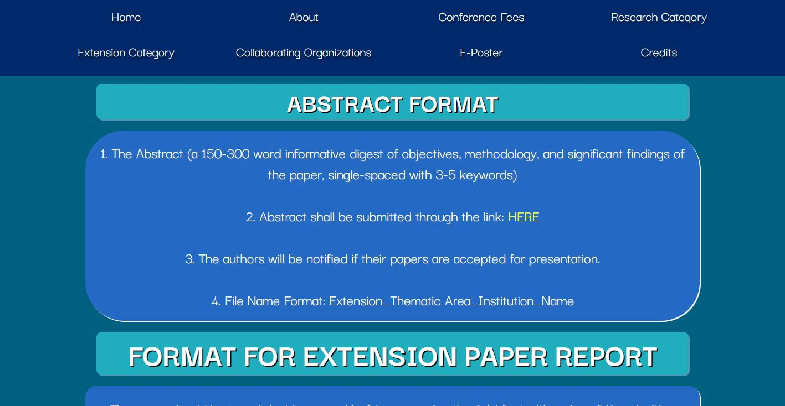
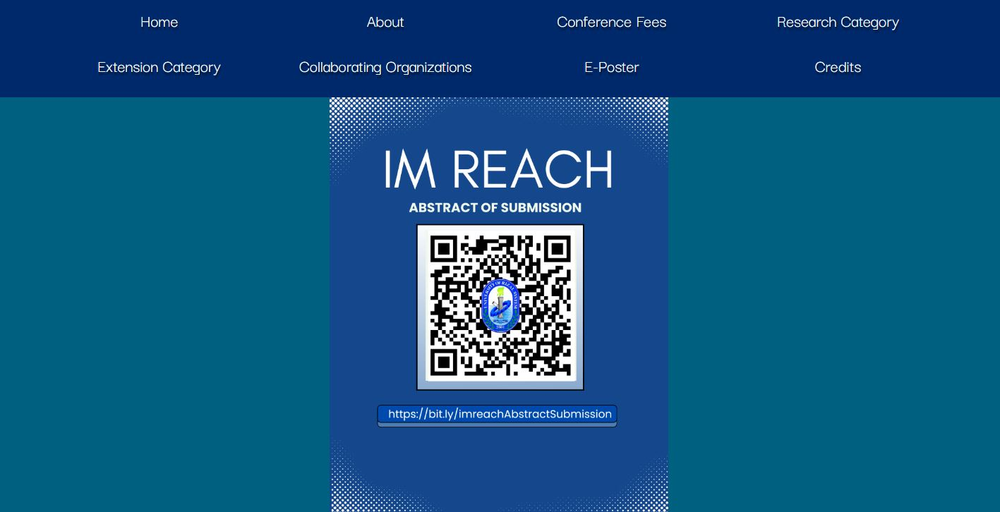
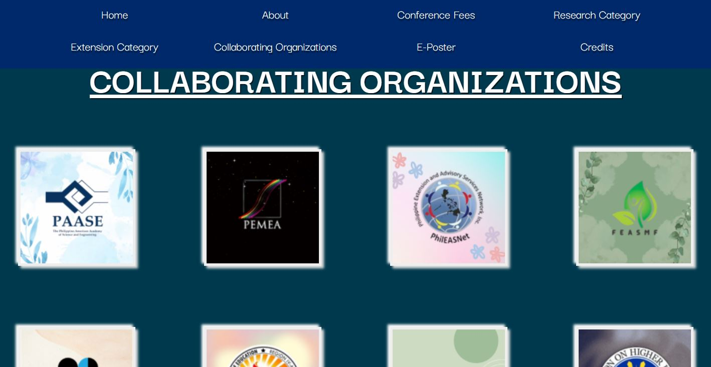
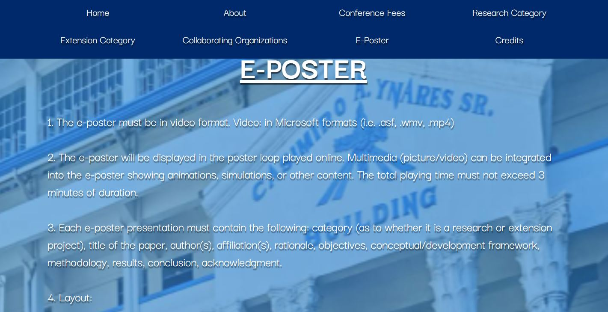
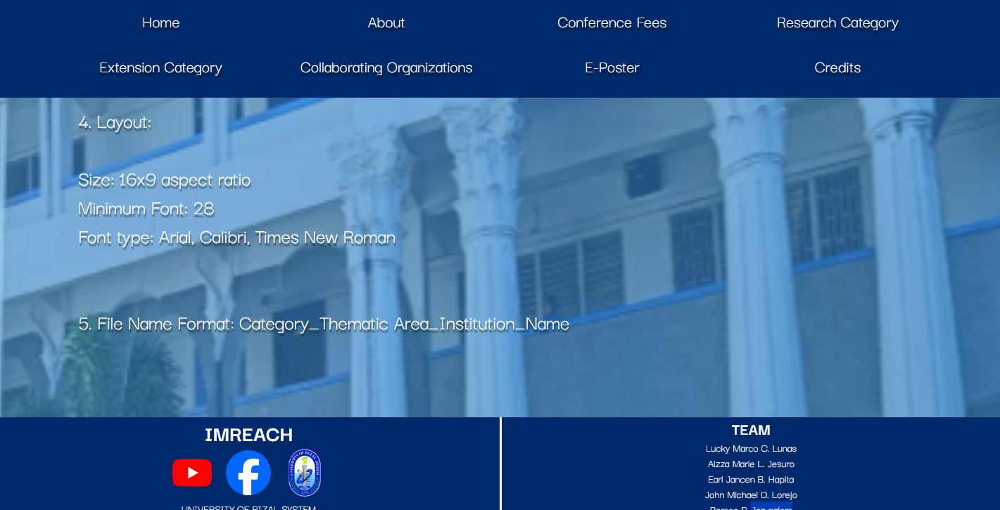

Back
 HTML
HTML
 CSS
CSS
 Bootstrap
Bootstrap

About the Website
imReach is a UI/UX design project focused on creating a modern, engaging, and user-friendly static website that effectively showcases the imReach project and its objectives. The website was carefully designed to provide visitors with a visually appealing and intuitive browsing experience while presenting information in a clear, organized, and accessible manner. The primary goal of the project is to establish a strong online presence through a clean and professional interface that communicates the project's purpose and encourages user engagement.
Build With
HTMLCSSBootstrapPhotos









